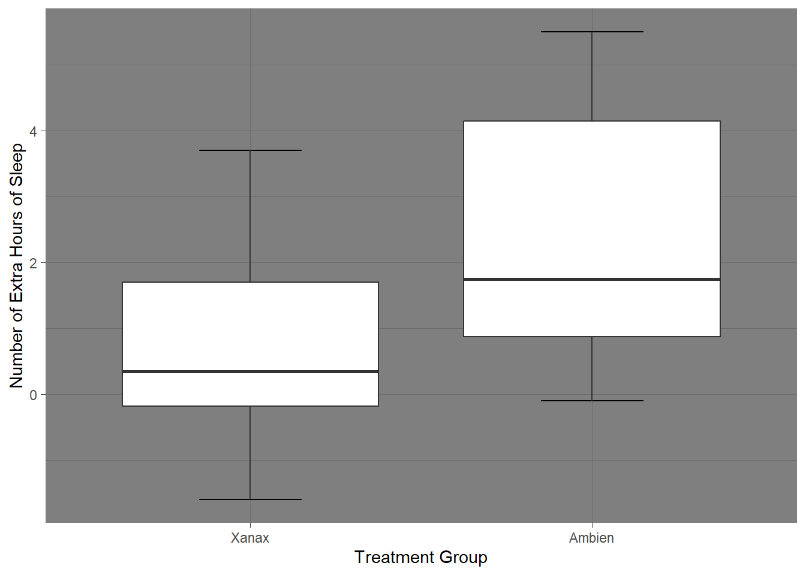
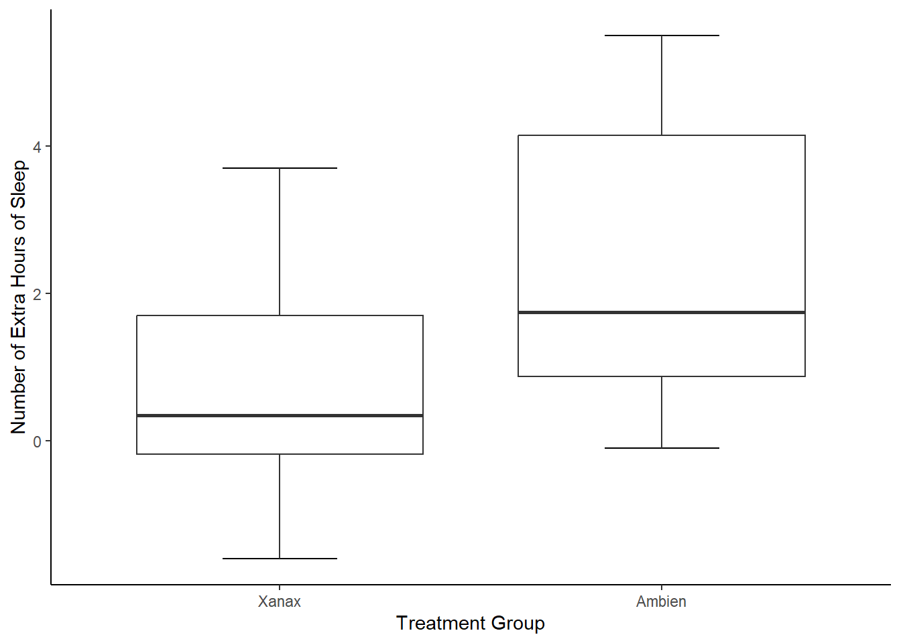
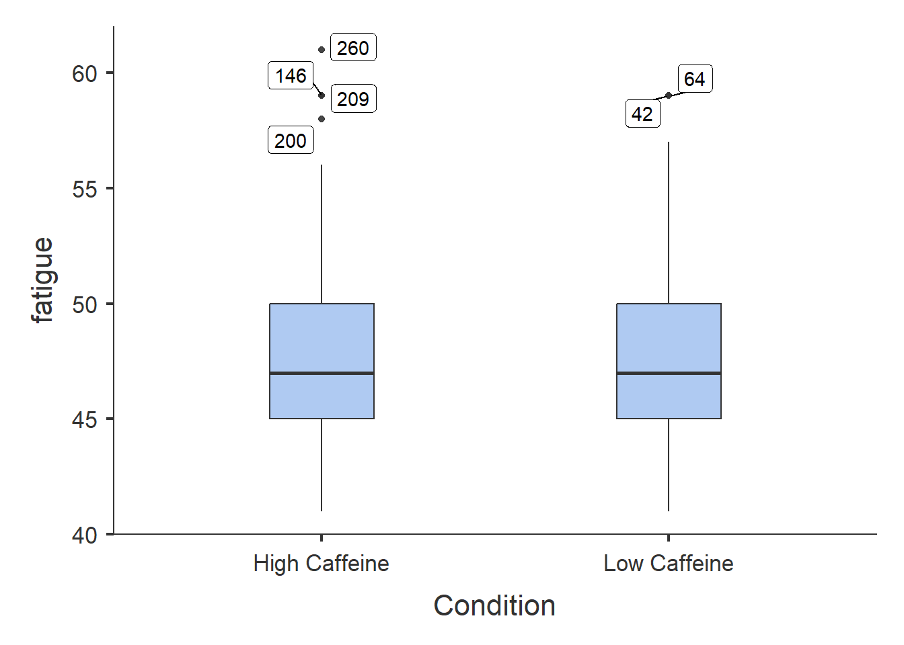
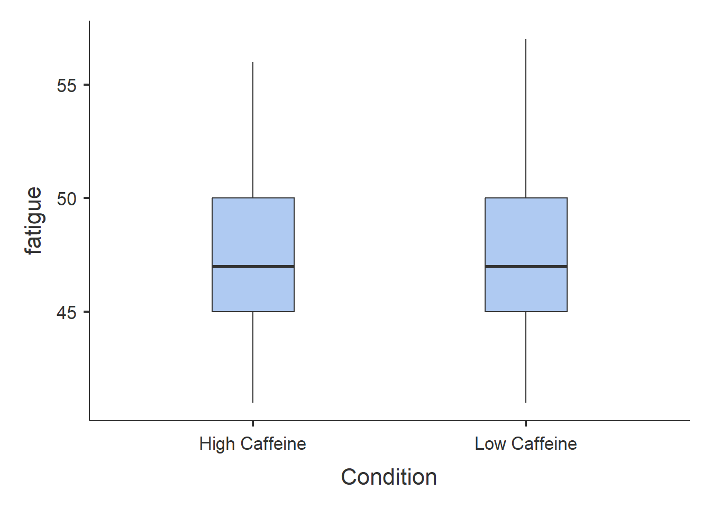
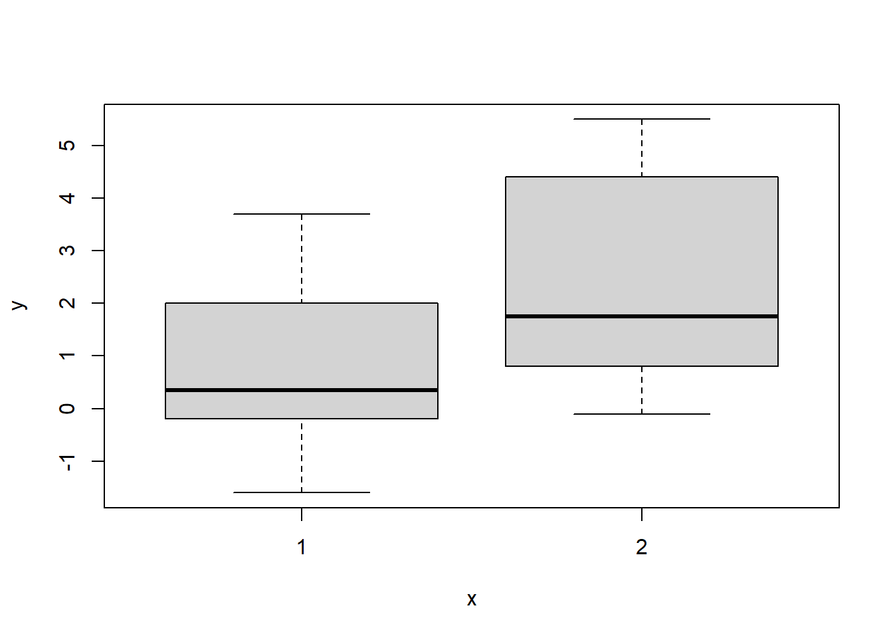

7 Data Visualisation in R {data-vis}
In this session, we are going to learn how to generate APA style plots in R. In particular, we are going to learn about the ggplot2 package and it’s associated function ggplot(). This package has been used to create plots for publications like the BBC and the Economist. By the end of this session you should be capable of:
- Understanding the logic of the ggplot method for drawing plots.
- Generating and customising elegant Box Plots, Violin Plots, Bar Charts, Scatterplots, Histograms, and Line Charts.
- Making your plots APA ready.
- Arranging and faceting (grouping together) your plots.
- Export your plots to PDFs.
7.1 Let’s Get Set Up
Open up RStudio or Posit Cloud and complete the following activities to get set up for today.
7.1.1 Activity: Set Up Your Working Directory
In your folder for this class, create a new folder called week6. Set this folder as your working directory. To do this, click Session -> Set Working Directory -> Choose Directory, then find your new folder, select it and click Open.
In your console, the path to that folder should now be printed. It should look something like this:
7.1.2 Activity: Prepare your R Script
Now in RStudio (or posit cloud), create an R script (try the keyboard shortcut: Ctrl-Shift-N on Windows, or command–shift–N on Mac) called 06-data-visualisation.R.
7.1.3 Activity: Install and Load Your Packages
We will be using the ggplot2, jtools, and patchwork in today’s session. Luckily, ggplot2 comes with Tidyverse, so we won’t need to install it if you have installed Tidyverse already. We will need to install patchwork. Copy and paste the following code to your R script. Copy and paste the code (minus the #) install.packages("patchwork") into your console first and press enter. Once that is installed, you can run the following code.
#install.packages("tidyverse") if tidyverse does not load for you, then you will need to run this command (minus the #) in your console first
library(tidyverse)
#install.packages(c("jtools", "patchwork"))
library(jtools) #this package enables us to make APA themed plots
library(patchwork) #this package enables us to arrange plots we have created7.1.4 Activity: Download and Import Your Files
We are going to need the following files for today’s session. You will find them in the Teams Channel under Channel 6 - Data Visualisation. The files are:
- File 1
- File 2
- File 3
Download these files onto your computer.
Now let’s load in our data files. Make sure all your files are in your week6 folder. Once they are, copy and paste the following code.
7.2 Introduction to ggplot2
We analysed the sleep data frame in our first session. We created and exported a plot using the base R plot() function
plot(sleep$group, sleep$extra,
xlab = "Treatment Group",
ylab = "Number of Extra Hours of Sleep",
main = "Effect of Treament on Sleep Duration")
This is a perfectly fine plot, but one of the major advantages of using R over other programming languages or other statistical software is that it enables you to develop customisable, elegant, and even interactive plots. This is thanks to the ggplot package and the ggplot2() function.
What does the gg in ggplot stand for?
The gg stands for the Grammar of Graphics. This is because ggplot is built upon a logical system of how to draw a plot. This system involves a logical order where you incrementally add different layers to your plot. By understanding these system, you’ll be able to create excellent plots in no-time. Luckily, this structure is relatively straightforward to understand.
7.3 How to Draw a Plot
We are going to recreate the plot we made in the first session using ggplot. After that, I am going to show you how we can use this function to make our plot more visually striking and informative using the same function. We will be using the sleep data frame again, but I am going to refer to as df for short.
7.3.1 First we set up the Canvas
The first thing we do when we want to create a plot is call the ggplot() function and tell it what data frame we are working from. In this case, we are using the sleep data frame. For short, I am going to refer it as df and tell call ggplot()
 This creates a grey canvas where we can draw our plot on. The default R canvas is grey, but we can the appearance of the canvas later on.
This creates a grey canvas where we can draw our plot on. The default R canvas is grey, but we can the appearance of the canvas later on.
Now that our canvas is set up, we will want to specify some aesthetic properties to our plot, like the y-axis and x-axis. To achieve this, we need to tell R to map a variable in our df to the x-axis and another variable to the y-axis. In ggplot, there is an argument called mapping = aes() that enables us to do this, where aes is short for aesthetics. Let’s may the group variable to the x-axis and the extra variable to the y-axis.

Now we can see that our x-axis is mapped to the two values in our group variable, whereas the y-axis is mapped to the range of values in the extra variable.
7.3.2 Creating our Box Plot
This sets up the shape of our canvas, the next thing we need to do is specify what type of plot we want to create. In ggplot, this means draw a geom (i.e., geometrical shape) onto our plot. There are dozens of geoms (see table at end of the chapter) that we can draw to our plot and we can draw multiple at the same time.
Since we are creating a boxplot, we’ll use the geom_boxplot geom.
 We can see that R has now drawn box plots for each of our groups. The default style in
We can see that R has now drawn box plots for each of our groups. The default style in ggplot() is not to add the whiskey horizontal lines (e.g., the T) at the top and end of each boxplot. Generally, I am happy enough with the default option, but since we are recreating our first boxplot, let’s add these whisker lines.
To do this, we need to tell R to create a shape based on statistical properties of our data. In particular, we need to create a statistical errorbar for a box plot. We can do this through adding the following line of code in our plot.
 Now we have our whisker lines. Now I am not perfeclty happy with the width of these error lines. We can change that by specifying
Now we have our whisker lines. Now I am not perfeclty happy with the width of these error lines. We can change that by specifying width in our stat_boxplot() function
ggplot(df, mapping = aes(x = group, y = extra)) +
stat_boxplot(geom ='errorbar', width = .3) +
geom_boxplot()
7.3.3 Changing the Name of Our X-Axis and Y-Axis
Okay, our plot is looking better. The next thing we will want to do is add informative labels to our x and y-axis. We can do this by using the ggplot functions scale_x_discrete and scale_y_continous to draw our labels.
ggplot(df, mapping = aes(x = group, y = extra)) +
stat_boxplot(geom ='errorbar', width = .3) +
geom_boxplot() +
scale_x_discrete(name = "Treatment Group") +
scale_y_continuous(name = "Number of Extra Hours of Sleep")
There now we have our x and y-labels. One thing that is bothering me is that our treatment group is labelled as 1 and 2. The sleep data frame does not provide us with any information on what each treatment group received. So I am going to take artistic liberties and say that 1 means Xanax and 2 means Ambien.
There are two aproaches we can take to add this to our plot.
The first approach would be to add labels to the x-axis, in scale_x_discrete().
ggplot(df, mapping = aes(x = group, y = extra)) +
stat_boxplot(geom ='errorbar', width = .3) +
geom_boxplot() +
scale_x_discrete(name = "Treatment Group",
labels = c("1" = "Xanax", #this changes the 1 in the x-axis to Xanax
"2" = "Ambien")) +
scale_y_continuous(name = "Number of Extra Hours of Sleep")The second approach would be to first change the data frame itself. We can do this using our old friend mutate(). I am going to create a variable called treatment that recode() the values in the group variable.
df <- mutate(df, treatment = recode(group, #recode changes variable values
`1` = "Xanax",
`2` = "Ambien"))
df$treatment## [1] Xanax Xanax Xanax Xanax Xanax Xanax Xanax Xanax Xanax Xanax
## [11] Ambien Ambien Ambien Ambien Ambien Ambien Ambien Ambien Ambien Ambien
## Levels: Xanax AmbienNow we can recreate our plot, but this time put treatment in the x-axis instead of group.
ggplot(df, mapping = aes(x = treatment, y = extra)) + #substitute treatment for group
stat_boxplot(geom ='errorbar', width = .3) +
geom_boxplot() +
scale_x_discrete(name = "Treatment Group") +
scale_y_continuous(name = "Number of Extra Hours of Sleep")
This produces the same plot. In this example, I prefer the second method. But I will explain why a little bit later.
Now, let’s change the look of our canvas.
7.3.4 Changing the Look (Theme) of Our Canvas
One of the nice features of ggplot() is can change the theme of our canvas. There are several themes that we can use (see table at the end of the chapter for more information). The current theme we are using is theme_gray, which is the default theme.
ggplot(df, mapping = aes(x = treatment, y = extra)) + #substitute treatment for group
stat_boxplot(geom ='errorbar', width = .3) +
geom_boxplot() +
scale_x_discrete(name = "Treatment Group") +
scale_y_continuous(name = "Number of Extra Hours of Sleep") +
theme_gray() That is perfectly fine, but I dislike the grey. We could also set it to
That is perfectly fine, but I dislike the grey. We could also set it to theme_bw (white background and black gridlines).
ggplot(df, mapping = aes(x = treatment, y = extra)) + #substitute treatment for group
stat_boxplot(geom ='errorbar', width = .3) +
geom_boxplot() +
scale_x_discrete(name = "Treatment Group") +
scale_y_continuous(name = "Number of Extra Hours of Sleep") +
theme_bw()
We could set it to a dark theme, using theme_dark()
ggplot(df, mapping = aes(x = treatment, y = extra)) + #substitute treatment for group
stat_boxplot(geom ='errorbar', width = .3) +
geom_boxplot() +
scale_x_discrete(name = "Treatment Group") +
scale_y_continuous(name = "Number of Extra Hours of Sleep") +
theme_dark()Or we could remove the grid lines and have a more classic approach, using theme_classic()
ggplot(df, mapping = aes(x = treatment, y = extra)) + #substitute treatment for group
stat_boxplot(geom ='errorbar', width = .3) +
geom_boxplot() +
scale_x_discrete(name = "Treatment Group") +
scale_y_continuous(name = "Number of Extra Hours of Sleep") +
theme_classic()
Since we are psychologists, we will mostly looking for plots in APA style. When you download ggplot() there is no pre-installed theme that matches this style. However, the jtools package we installed and loaded comes with an apa_theme(). Make sure that is loaded before running the following code:
ggplot(df, mapping = aes(x = treatment, y = extra)) + #substitute treatment for group
stat_boxplot(geom ='errorbar', width = .3) +
geom_boxplot() +
scale_x_discrete(name = "Treatment Group") +
scale_y_continuous(name = "Number of Extra Hours of Sleep") +
theme_apa()
And now we have a pretty nice looking plot. Let’s change the colour, to match our original plot we created in week 1 by adding fill = "grey" inside geom_boxplot().
ggplot(df, mapping = aes(x = treatment, y = extra)) + #substitute treatment for group
stat_boxplot(geom ='errorbar', width = .3) +
geom_boxplot(fill = "grey") +
scale_x_discrete(name = "Treatment Group") +
scale_y_continuous(name = "Number of Extra Hours of Sleep") +
theme_apa()
7.4 The Real Power of ggplot - Customisation
You might be wondering right now how useful is ggplot really. I mean, if you compare the two code chunks to create essentially the same plot, you’ll notice that approach we took in week 1 is significantly shorter.
#base R approach
plot(sleep$group, sleep$extra,
xlab = "Treatment Group",
ylab = "Number of Extra Hours of Sleep",
main = "Effect of Treament on Sleep Duration")
#ggplot approach
ggplot(df, mapping = aes(x = treatment, y = extra)) +
stat_boxplot(geom ='errorbar', width = .3) +
geom_boxplot(fill = "grey") +
scale_x_discrete(name = "Treatment Group") +
scale_y_continuous(name = "Number of Extra Hours of Sleep") +
theme_apa()The real power of ggplot is the ability to customize our graphs to make them more striking and informative. We have seen glimpses of this already with the ability to add labels, colour, and themes to our plots. In this section, I am going to show you more ways we can customise our plot.
7.4.1 Mapping Aesthetic Properties (like Colour and Fill) to Our Variables
In the last section, I used the argument fill = grey to specify the colour of boxplots. If I wanted multiple colours, I could have used the c() function in that argument:
ggplot(df, mapping = aes(x = treatment, y = extra)) +
stat_boxplot(geom ='errorbar', width = .3) +
geom_boxplot(fill = c("green", "orange")) +
scale_x_discrete(name = "Treatment Group") +
scale_y_continuous(name = "Number of Extra Hours of Sleep") +
theme_apa()
This approach is okay if are only specifying a limited number of colours, but if there are several colours we need to specify, it is cumbersome. Luckily, we can ask R to map the colours of boxplot to specific values in our data frame. We do this through a similar approach used in ggplot() where we add the argument mapping = aes() to our geom_boxplot() function. This time inside the aes() argument, we specify that we want the fill (the colour inside our boxplots) to map to the variable treatment.
ggplot(df, mapping = aes(x = treatment, y = extra)) +
stat_boxplot(geom ='errorbar', width = .3) +
geom_boxplot(mapping = aes(fill = treatment)) +
scale_x_discrete(name = "Treatment Group") +
scale_y_continuous(name = "Number of Extra Hours of Sleep") +
theme_apa()
R will choose colours that are visually distinct from each other. Additionally, it will add a legend to our graph. If you want to remove the legend, add show.legend = FALSE to the geom_boxplot() function.
7.4.2 Changing the Value of Our Y-Axis
I can tell R to specify the number of breaks on the y-axis. At the moment, it is only showing breaks in increments of two. R will try find a straightforward solution to the number of points on the y-axis. We can override this by using the breaks() argument in scale_y_continous, which will add a break between each number specified.
ggplot(df, mapping = aes(x = treatment, y = extra)) +
stat_boxplot(geom ='errorbar', width = .3) +
geom_boxplot(mapping = aes(fill = treatment)) +
scale_x_discrete(name = "Treatment Group") +
scale_y_continuous(name = "Number of Extra Hours of Sleep",
breaks = c(-2:6) #this will add a break for each value between -2 and +6
) +
theme_apa() ### Plotting our Data Points in the Graph
What if I wanted to add individual data points to our graph? To provide more information on the scatter of scores? There are two options I can use. The first option is to the use the geom_point(), which will each participant’s data point to the graph. Since there are only two possible observations in the x-axis, all data points will be printed in a straight line for each observation.
ggplot(df, mapping = aes(x = treatment, y = extra)) +
stat_boxplot(geom ='errorbar', width = .3) +
geom_boxplot(mapping = aes(fill = treatment)) +
scale_x_discrete(name = "Treatment Group") +
scale_y_continuous(name = "Number of Extra Hours of Sleep",
breaks = c(-2:6) #this will add a break for each value between -2 and +6
) +
theme_apa() +
geom_point() #will add individual scores onto to the graph This is a perfectly legitimate approach to take. There is not a lot of data, so we can make our each individual point, even if there is some overlap. However, we can use another approach called
This is a perfectly legitimate approach to take. There is not a lot of data, so we can make our each individual point, even if there is some overlap. However, we can use another approach called geom_jitter(). This will plot each individual point just like geom_point() does, but it will add some random movement (i.e. a jitter) to each point. This can prevent overplotting of individual points.
ggplot(df, mapping = aes(x = treatment, y = extra)) +
stat_boxplot(geom ='errorbar', width = .3) +
geom_boxplot(mapping = aes(fill = treatment)) +
scale_x_discrete(name = "Treatment Group") +
scale_y_continuous(name = "Number of Extra Hours of Sleep",
breaks = c(-2:6) #this will add a break for each value between -2 and +6
) +
theme_apa() +
geom_jitter() #will add individual scores onto to the graph and give them space away from each otherThe added space left or right for each data point is randomly generated. But we can reduce the upper and lower bounds of that random generation. Let’s do that for our current plot.
ggplot(df, mapping = aes(x = treatment, y = extra)) +
stat_boxplot(geom ='errorbar', width = .3) +
geom_boxplot(mapping = aes(fill = treatment)) +
scale_x_discrete(name = "Treatment Group") +
scale_y_continuous(name = "Number of Extra Hours of Sleep",
breaks = c(-2:6) #this will add a break for each value between -2 and +6
) +
theme_apa() +
geom_jitter(width = .20) #changes the horizontal jitter
7.4.3 Extra stuff
### editing our x and y-labels
ggplot(df, mapping = aes(x = group, y = extra)) +
stat_boxplot(geom ='errorbar', width = .3) +
geom_boxplot(aes(fill = group)) +
scale_x_discrete(name = "Treatment Group", labels = c("1" = "Placebo",
"2" = "Xanax")) +
scale_y_continuous(name = "Number of Extra Hours of Sleep",
breaks = c(-2:6)) 
7.5 Geoms
| Geom | Description | Similar Plot |
|---|---|---|
geom_point() |
Adds points to the plot. Useful for scatter plots to visualize the relationship between two continuous variables. | Scatter Plot |
geom_line() |
Connects points with lines. Often used to represent trends or changes over time in continuous data. | Line Plot |
geom_bar() |
Displays bars representing counts or frequencies of categorical data. Useful for comparing categories. | Bar Chart |
geom_histogram() |
Similar to geom_bar(), but used for continuous data. Creates bins of data and displays bars showing frequency distribution. | Histogram |
geom_boxplot() |
Represents the distribution of a continuous variable through quartiles, median, and outliers. Useful for identifying outliers and comparing distributions. | Box Plot |
geom_area() |
Fills the area below the line in a line plot. Useful for highlighting the cumulative effect of changes in a variable over time. | Area Plot |
geom_smooth() |
Adds a smoothed line to the plot, often useful for visualizing trends or patterns in noisy data. | Trend Line |
geom_text() |
Adds text labels to the plot, allowing annotation of specific points or adding additional information. | Text Annotation |
geom_label() |
Similar to geom_text(), but adds labels with a background, making them more prominent and readable. | Labeled Text |
geom_hline() |
Draws horizontal lines across the plot, useful for highlighting specific reference points or thresholds. | Horizontal Line |
geom_vline() |
Draws vertical lines on the plot, similar to geom_hline(), but for vertical lines. | Vertical Line |
geom_polygon() |
Draws polygons based on provided coordinates, useful for creating custom shapes or highlighting areas on a plot. | Polygon Plot |
geom_errorbar() |
Adds error bars to the plot, indicating uncertainty or variability in the data. | Error Bar Plot |
geom_jitter() |
Adds random noise to points, useful for avoiding overplotting in dense scatter plots. | Jittered Scatter Plot |
geom_tile() |
Creates a heatmap by filling rectangles with color based on a continuous variable. Useful for visualizing patterns in 2D data. | Heatmap |
geom_path() |
Similar to geom_line(), but does not close the path, useful for plotting trajectories or paths. | Path Plot |
7.6 Themes
| Theme | Description |
|---|---|
theme_gray() |
Default theme with a gray background. |
theme_bw() |
Theme with a white background and black gridlines. |
theme_minimal() |
Minimalistic theme with a light gray background and no gridlines. |
theme_light() |
Theme with a light gray background and gridlines. |
theme_dark() |
Theme with a dark gray background and white gridlines. |
theme_classic() |
Classic theme resembling base R plots. |
theme_void() |
Theme with no background, gridlines, or axis elements. |
theme_linedraw() |
Theme resembling hand-drawn plots, with a white background and black gridlines. |